長期トレンド
JKMとJEPXシステムプライスの推移グラフ
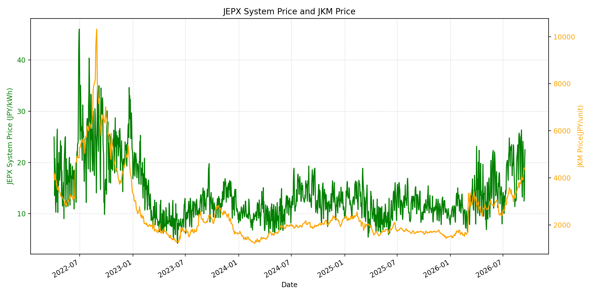
WTIの推移グラフ
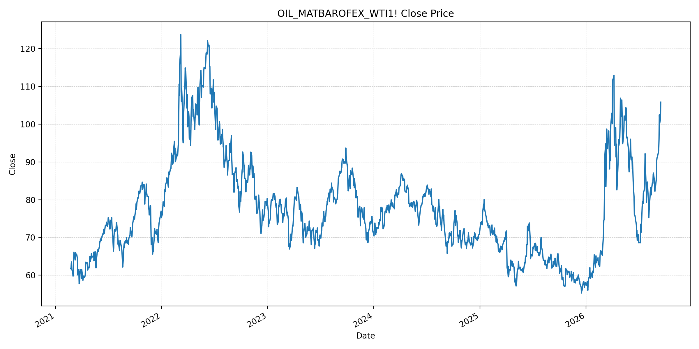
JEPXエリアプライスグラフ（直近一年分）
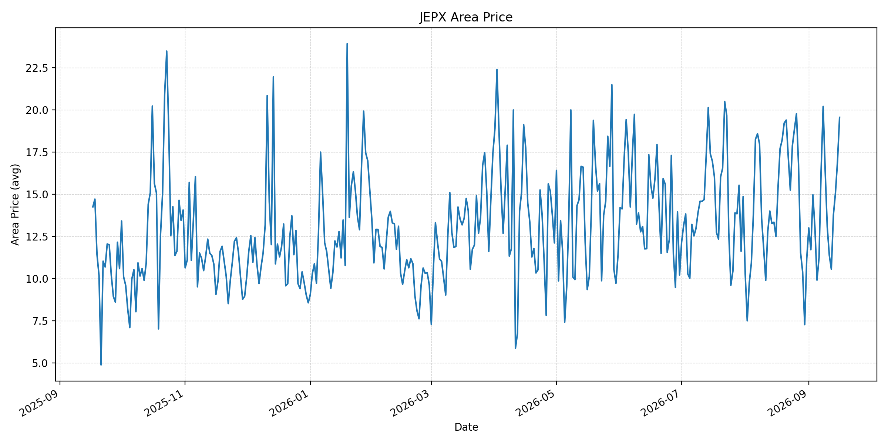
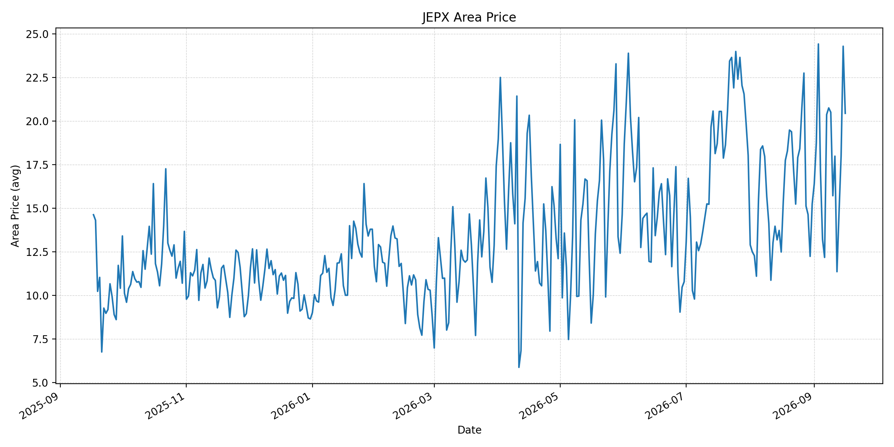
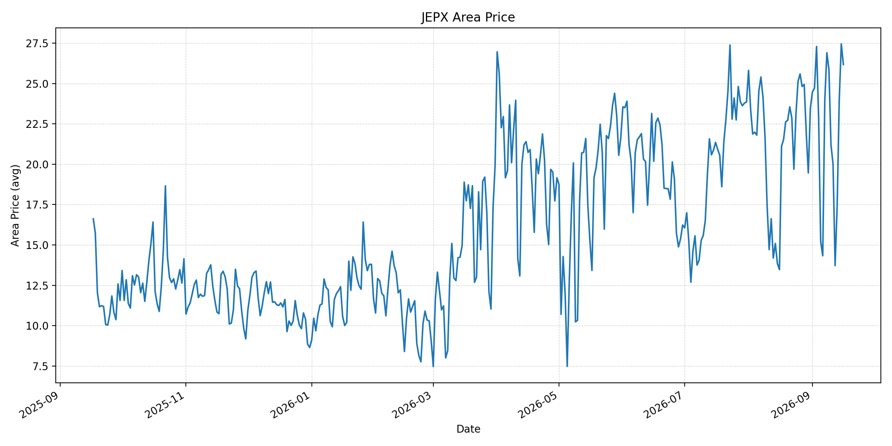
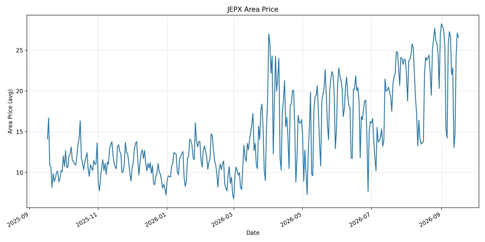
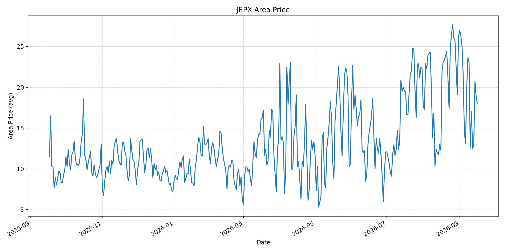
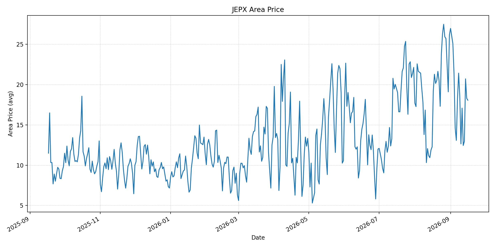
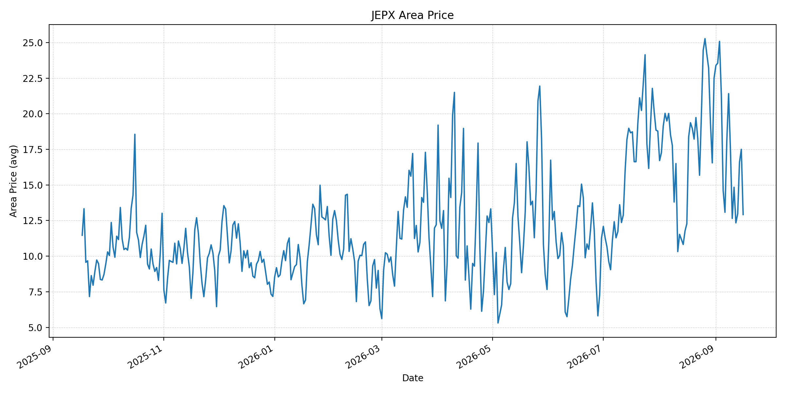
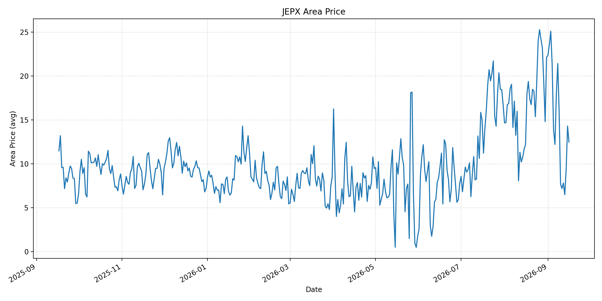
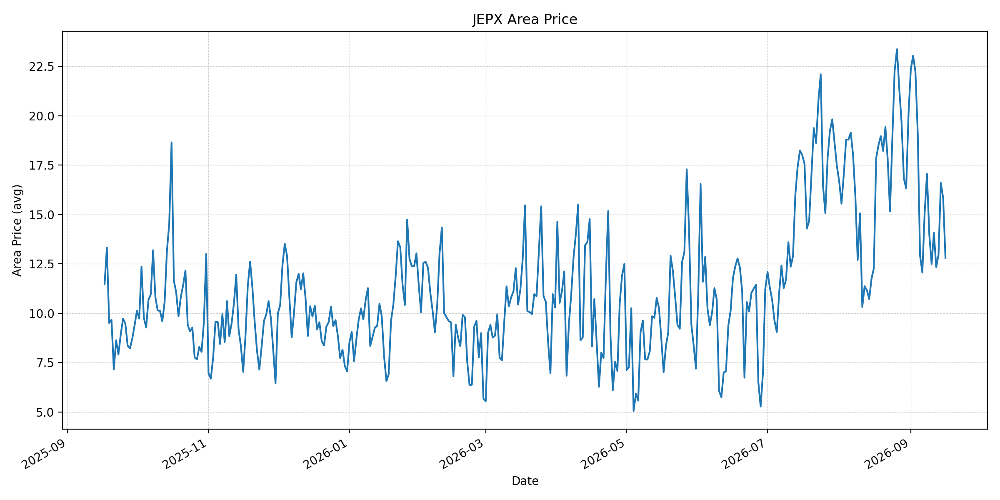
短期トレンド
JKMとJEPXシステムプライスの推移グラフ
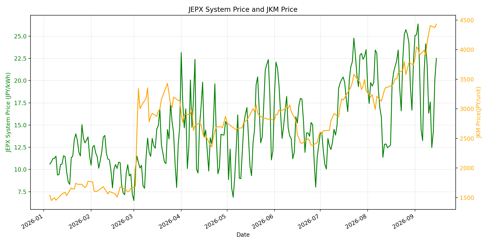
WTIの推移グラフ
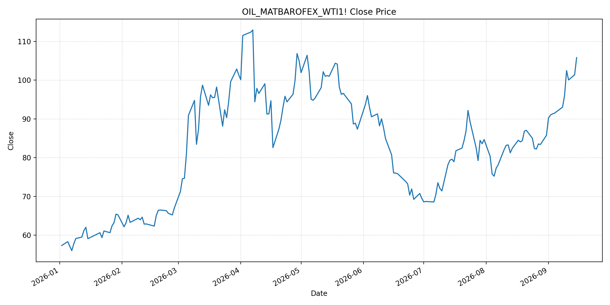
JEPXシステムプライス
最新値は 2026-09-16 分、先週終値は 2026-09-09、先月終値は 2026-08-31 時点の直近値です。
| エリア | 当日価格 | 前日価格 | 前日比（％） | 先週終値 | 先週比（％） | 先月終値 | 先月比（％） | 過去最高値 | 最高値比（％） |
|---|---|---|---|---|---|---|---|---|---|
| システム | 20.72 | 22.51 | -7.95 | 21.61 | -4.12 | 22.10 | -6.24 | 64.06 | -67.66 |
| 北海道 | 19.55 | 16.96 | 15.27 | 16.36 | 19.50 | 11.18 | 74.87 | 73.92 | -73.55 |
| 東北 | 20.45 | 24.30 | -15.84 | 20.51 | -0.29 | 15.25 | 34.10 | 84.92 | -75.92 |
| 東京 | 26.17 | 27.45 | -4.66 | 25.86 | 1.20 | 23.47 | 11.50 | 86.13 | -69.62 |
| 中部 | 26.55 | 27.11 | -2.07 | 26.68 | -0.49 | 27.01 | -1.70 | 52.06 | -49.00 |
| 北陸 | 18.06 | 18.90 | -4.44 | 23.03 | -21.58 | 26.18 | -31.02 | 46.48 | -61.15 |
| 関西 | 18.06 | 18.30 | -1.31 | 18.54 | -2.59 | 26.17 | -30.99 | 46.48 | -61.15 |
| 中国 | 12.92 | 17.50 | -26.17 | 17.52 | -26.26 | 22.51 | -42.60 | 46.48 | -72.21 |
| 四国 | 12.47 | 14.29 | -12.74 | 15.81 | -21.13 | 22.12 | -43.63 | 46.48 | -73.17 |
| 九州 | 12.80 | 15.84 | -19.19 | 14.00 | -8.57 | 20.06 | -36.19 | 40.54 | -68.43 |
LNG先物価格
最新値は 2026-09-15 の LNG(close) です。先週終値は 2026-09-08、先月終値は 2026-08-31 時点の直近値です。
| 当日価格 | 前日価格 | 前日比（％） | 先週終値 | 先週比（％） | 先月終値 | 先月比（％） | 過去最高値 | 最高値比（％） |
|---|---|---|---|---|---|---|---|---|
| 4433.00 | 4373.00 | 1.37 | 3905.00 | 13.52 | 3744.00 | 18.40 | 10319.00 | -57.04 |
石油先物価格
最新値は 2026-09-15 の OIL(close) です。先週終値は 2026-09-08、先月終値は 2026-08-31 時点の直近値です。
| 当日価格 | 前日価格 | 前日比（％） | 先週終値 | 先週比（％） | 先月終値 | 先月比（％） | 過去最高値 | 最高値比（％） |
|---|---|---|---|---|---|---|---|---|
| 105.83 | 101.39 | 4.38 | 93.03 | 13.76 | 85.76 | 23.40 | 123.70 | -14.45 |
ニュース
イラン情勢に関するニュース
- 米軍は、海上ドローンを奪取しようとしたイランの小型艇2隻を破壊したと発表しました。海域での直接対峙が継続しています。参照: AP, 2026-09-15
- 同日、イラン革命防衛隊は、パナマ船籍の石油タンカーがホルムズ海峡南方の禁止区域で機雷に接触したと発表しました。参照: Reuters, 2026-09-15
ホルムズ海峡経由の石油・LNGに関するニュース
- 米国は商船通航の回復を保護しようとしているものの、ホルムズ海峡の石油輸送量は戦前水準を下回っています。参照: Axios, 2026-09-15
- タンカー攻撃後の通航減速と米・イラン協議の停滞が続いています。過去24時間で、LNG輸送を平常化する主要な新規合意は確認できませんでした。参照: Reuters, 2026-09-15
ホルムズ海峡経由でない石油・LNGに関するニュース
- サウジアラビア皇太子はエジプトに支援を求め、フーシ派による紅海の海運・インフラへの攻撃が世界の原油価格上昇を後押ししていると報じられました。参照: AP, 2026-09-15
- サウジ東西パイプラインの停止と、バブ・エル・マンデブ海峡付近でのフーシ派の足場強化により、紅海経由の代替搬出能力も制約されています。参照: AP, 2026-09-15
日本国内のイラン戦争に関係するニュース
- 過去24時間で、イラン戦争を理由にJEPXの制度または国内の電力需給運用を直接変更する主要な新規公表は確認できませんでした。
- 日本の電力市場では、燃料輸入の不確実性が高まる一方で、当日スポット価格は気象・再エネ出力・需給にも左右されます。燃料相場だけによる機械的な価格転嫁は前提としません。
インサイト
ニュース事項による日本の電力市場への影響（短期：数日〜1週間）
- JEPXシステムは 20.72 円/kWhで前日比 -7.95%、先週比 -4.12% です。東京・中部は26円/kWh台を維持する一方、中国・四国・九州は12円/kWh台へ低下しました。
- LNGは 4433.00 で前日比 1.37%、WTIは 105.83 ドルで 4.38% 上昇しました。海上の直接衝突、ホルムズ輸送の低水準、サウジの代替搬出制約は、次回調達の燃料・輸送コストを押し上げる可能性があります。
- 短期では、ホルムズ海峡の実通航数、機雷・ドローン関連事案、パイプライン復旧時期、紅海の船舶安全とスポットLNG船腹を日次で確認します。
ニュース事項による日本の電力市場への影響（長期：1ヶ月〜半年）
- システム価格は先月比 -6.24% ですが、LNGは 18.40%、WTIは 23.40% 上昇しています。物流制約が継続すれば、火力の限界費用と小売調達コストへ段階的に波及する可能性があります。
- 北海道は先月比 74.87%、東北は 34.10% 上昇する一方、中国は -42.60%、四国は -43.63% です。燃料相場とエリア別の需給・連系線制約を分けて評価する必要があります。
- ホルムズ海峡、サウジ西向け搬出、バブ・エル・マンデブ海峡の複数経路が同時に制約される場合、調達先の分散、LNG在庫、長期契約の柔軟性、代替輸送の実効性が中長期の重要変数になります。